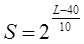

3.2 Громкость звука
Если
сравнить между собой громкость двух чистых тонов одинаковой частоты, то чем
больше амплитуда звукового давления, тем более громким будет звук. Однако
человеческое ухо имеет разную чувствительность к звукам разной частоты, то есть
на разных частотах одинаковую громкость могут иметь звуки разной интенсивности.
Область наилучшей слышимости лежит в интервале от 1000 до 5000 Гц.
На низких и высоких частотах чувствительность слухового аппарата
снижается.
Громкость звука оценивают, сравнивая ее с громкостью чистого тона частотой 1000 Гц. Уровень звукового давления (в дБ) чистого тона с частотой 1000 Гц, столь же громкого (сравнением на слух), как и измеряемый звук, называется уровнем громкости данного звука (в фонах). На практике для оценки громкости звука различных частот используют «кривые равной громкости» - геометрическое место точек равногромких тонов различных частот:
Кривые
равной громкости
Нижняя
кривая показывает зависимость порога слышимости от частоты. На частоте 1000 Гц
порог слышимости соответствует давлению 0,02 мПа (0 дБ). В области очень низких
или очень высоких частот порог слышимости повышается и может составлять 80 – 100
дБ. Следует отметить, что с возрастом порог слышимости сдвигается, особенно в
области высоких частот.
Возрастные изменения порога
слышимости
В
области наилучшей слышимости ухо способно различить около 370 градаций по
громкости, а на частоте 60 Гц число градаций только 34. Эти данные соответствуют
условиям тонкого опыта при полной тишине. Практически человек с нормальным
слухом начинает замечать прирост уровня звука на 1 дБ, то есть на 26% по
интенсивности звука.
Примеры
уровня громкости различных звуков:
-
шум авиамотора (на расстоянии
-
вагон метро на большой скорости – 90- 95 фон;
-
шумная улица - 80-85 фон;
-
шум в городской квартире – 40-50 фон;
-
шепот на расстоянии
Шкала
уровней громкости не является натуральной шкалой, то есть, например, изменение
уровня громкости в два раза не означает, что субъективное ощущение громкости
звука изменится во столько же раз. Для оценки субъективного восприятия громкости
звука введена шкала сонов. Громкость звука в сонах
равна
,
где
L – уровень громкости в
фонах.
Из формулы видно, что громкость в 1 сон имеет звук с уровнем громкости L = 40 фон. Изменение уровня громкости на 10 фон соответствует изменению громкости звука в два раза.
Диапазоны
громкости различных звуков иллюстрирует рисунок:
< Предыдущая Оглавление Следующая >